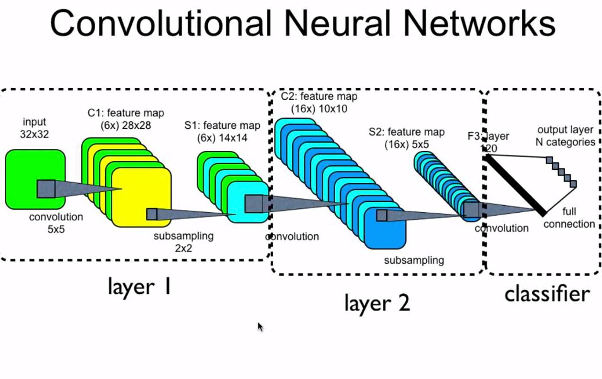

QuickDraw-LITE is an implemenatation of Google QuickDraw that uses a convolution Neural Network to recognize various hand drawings submitted.
The CNN was trained to recognize 150 classes using the quick draw dataset.
It will display the top five predictions for any drawing submitted by the user.
The original QuickDraw game is trained for 345 classes
and the whole dataset can be found at QuickDraw dataset

Training Statistics
Top 5 categorical accuracy
Loss